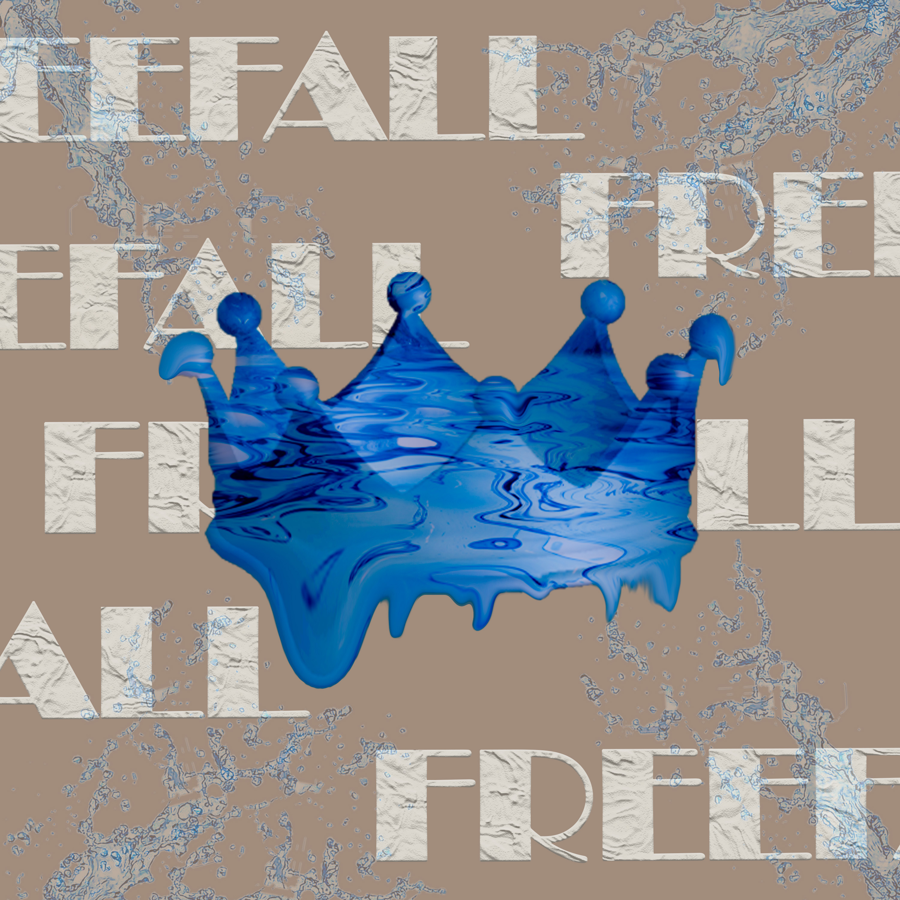

FREEFALL
Un álbum que nos hace caer y levantarnos al mismo tiempo. Freefall refleja esa sensación de lanzarse al vacío sin saber qué va a pasar, pero con la confianza de que el salto vale la pena. Con una mezcla de melodías suaves y explosivas, este disco habla de la libertad, la valentía y el deseo de ser auténtico en un mundo lleno de expectativas.

Lista de canciones:
Back for more 02:42
Dreamer 03:06
Growing pain 03:20